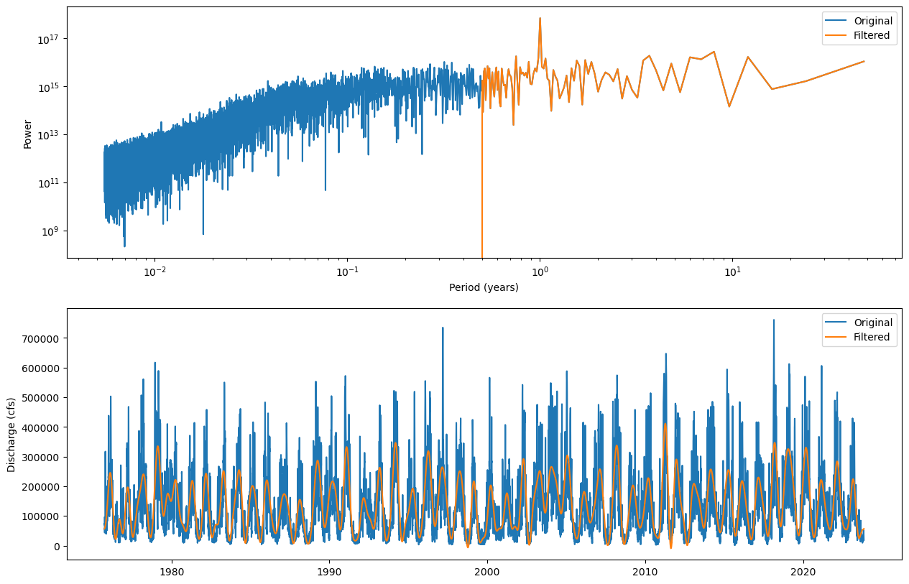
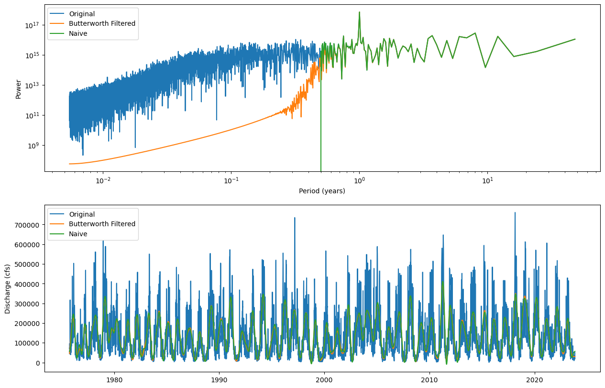
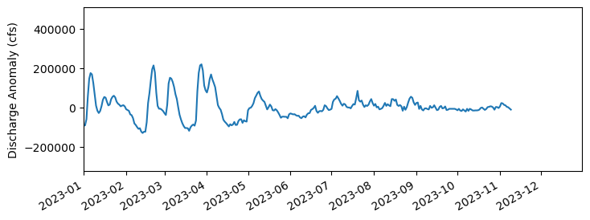

Work-along: Simple filtering#
This notebook demonstrates using the FFT to filter timeseries data. It also demonstrates a higher-quality approach using a Butterworth fitler.
""" Import libraries. """
import numpy as np
import pandas as pd
import matplotlib.pyplot as plt
""" Load the data file. """
skiprows = 30
streamflow_url = "https://raw.githubusercontent.com/taobrienlbl/advanced_earth_science_data_analysis/fall_2025_iub/content/lessons/11_spectral_analysis_intro/cannelton_flow.dat"
# load the data
data = pd.read_csv(
streamflow_url,
skiprows = skiprows,
delim_whitespace = True,
names = ['org', 'id', 'date', 'flow', 'flag'],
parse_dates=['date'],
)
fig, ax = plt.subplots()
data.plot(ax = ax, x='date', y='flow', figsize=(15,5))
ax.set_ylabel('Discharge (cfs)')
plt.show()
/tmp/ipykernel_823331/1491295669.py:7: FutureWarning: The 'delim_whitespace' keyword in pd.read_csv is deprecated and will be removed in a future version. Use ``sep='\s+'`` instead
data = pd.read_csv(
---------------------------------------------------------------------------
SSLCertVerificationError Traceback (most recent call last)
File ~/.local/share/uv/python/cpython-3.12.10-linux-x86_64-gnu/lib/python3.12/urllib/request.py:1344, in AbstractHTTPHandler.do_open(self, http_class, req, **http_conn_args)
1343 try:
-> 1344 h.request(req.get_method(), req.selector, req.data, headers,
1345 encode_chunked=req.has_header('Transfer-encoding'))
1346 except OSError as err: # timeout error
File ~/.local/share/uv/python/cpython-3.12.10-linux-x86_64-gnu/lib/python3.12/http/client.py:1338, in HTTPConnection.request(self, method, url, body, headers, encode_chunked)
1337 """Send a complete request to the server."""
-> 1338 self._send_request(method, url, body, headers, encode_chunked)
File ~/.local/share/uv/python/cpython-3.12.10-linux-x86_64-gnu/lib/python3.12/http/client.py:1384, in HTTPConnection._send_request(self, method, url, body, headers, encode_chunked)
1383 body = _encode(body, 'body')
-> 1384 self.endheaders(body, encode_chunked=encode_chunked)
File ~/.local/share/uv/python/cpython-3.12.10-linux-x86_64-gnu/lib/python3.12/http/client.py:1333, in HTTPConnection.endheaders(self, message_body, encode_chunked)
1332 raise CannotSendHeader()
-> 1333 self._send_output(message_body, encode_chunked=encode_chunked)
File ~/.local/share/uv/python/cpython-3.12.10-linux-x86_64-gnu/lib/python3.12/http/client.py:1093, in HTTPConnection._send_output(self, message_body, encode_chunked)
1092 del self._buffer[:]
-> 1093 self.send(msg)
1095 if message_body is not None:
1096
1097 # create a consistent interface to message_body
File ~/.local/share/uv/python/cpython-3.12.10-linux-x86_64-gnu/lib/python3.12/http/client.py:1037, in HTTPConnection.send(self, data)
1036 if self.auto_open:
-> 1037 self.connect()
1038 else:
File ~/.local/share/uv/python/cpython-3.12.10-linux-x86_64-gnu/lib/python3.12/http/client.py:1479, in HTTPSConnection.connect(self)
1477 server_hostname = self.host
-> 1479 self.sock = self._context.wrap_socket(self.sock,
1480 server_hostname=server_hostname)
File ~/.local/share/uv/python/cpython-3.12.10-linux-x86_64-gnu/lib/python3.12/ssl.py:455, in SSLContext.wrap_socket(self, sock, server_side, do_handshake_on_connect, suppress_ragged_eofs, server_hostname, session)
449 def wrap_socket(self, sock, server_side=False,
450 do_handshake_on_connect=True,
451 suppress_ragged_eofs=True,
452 server_hostname=None, session=None):
453 # SSLSocket class handles server_hostname encoding before it calls
454 # ctx._wrap_socket()
--> 455 return self.sslsocket_class._create(
456 sock=sock,
457 server_side=server_side,
458 do_handshake_on_connect=do_handshake_on_connect,
459 suppress_ragged_eofs=suppress_ragged_eofs,
460 server_hostname=server_hostname,
461 context=self,
462 session=session
463 )
File ~/.local/share/uv/python/cpython-3.12.10-linux-x86_64-gnu/lib/python3.12/ssl.py:1041, in SSLSocket._create(cls, sock, server_side, do_handshake_on_connect, suppress_ragged_eofs, server_hostname, context, session)
1040 raise ValueError("do_handshake_on_connect should not be specified for non-blocking sockets")
-> 1041 self.do_handshake()
1042 except:
File ~/.local/share/uv/python/cpython-3.12.10-linux-x86_64-gnu/lib/python3.12/ssl.py:1319, in SSLSocket.do_handshake(self, block)
1318 self.settimeout(None)
-> 1319 self._sslobj.do_handshake()
1320 finally:
SSLCertVerificationError: [SSL: CERTIFICATE_VERIFY_FAILED] certificate verify failed: unable to get local issuer certificate (_ssl.c:1010)
During handling of the above exception, another exception occurred:
URLError Traceback (most recent call last)
Cell In[2], line 7
4 streamflow_url = "https://raw.githubusercontent.com/taobrienlbl/advanced_earth_science_data_analysis/fall_2025_iub/content/lessons/11_spectral_analysis_intro/cannelton_flow.dat"
6 # load the data
----> 7 data = pd.read_csv(
8 streamflow_url,
9 skiprows = skiprows,
10 delim_whitespace = True,
11 names = ['org', 'id', 'date', 'flow', 'flag'],
12 parse_dates=['date'],
13 )
15 fig, ax = plt.subplots()
16 data.plot(ax = ax, x='date', y='flow', figsize=(15,5))
File /N/project/easg690_fall2025/student_work_dirs/obrienta/advanced_earth_science_data_analysis/.venv/lib/python3.12/site-packages/pandas/io/parsers/readers.py:1026, in read_csv(filepath_or_buffer, sep, delimiter, header, names, index_col, usecols, dtype, engine, converters, true_values, false_values, skipinitialspace, skiprows, skipfooter, nrows, na_values, keep_default_na, na_filter, verbose, skip_blank_lines, parse_dates, infer_datetime_format, keep_date_col, date_parser, date_format, dayfirst, cache_dates, iterator, chunksize, compression, thousands, decimal, lineterminator, quotechar, quoting, doublequote, escapechar, comment, encoding, encoding_errors, dialect, on_bad_lines, delim_whitespace, low_memory, memory_map, float_precision, storage_options, dtype_backend)
1013 kwds_defaults = _refine_defaults_read(
1014 dialect,
1015 delimiter,
(...) 1022 dtype_backend=dtype_backend,
1023 )
1024 kwds.update(kwds_defaults)
-> 1026 return _read(filepath_or_buffer, kwds)
File /N/project/easg690_fall2025/student_work_dirs/obrienta/advanced_earth_science_data_analysis/.venv/lib/python3.12/site-packages/pandas/io/parsers/readers.py:620, in _read(filepath_or_buffer, kwds)
617 _validate_names(kwds.get("names", None))
619 # Create the parser.
--> 620 parser = TextFileReader(filepath_or_buffer, **kwds)
622 if chunksize or iterator:
623 return parser
File /N/project/easg690_fall2025/student_work_dirs/obrienta/advanced_earth_science_data_analysis/.venv/lib/python3.12/site-packages/pandas/io/parsers/readers.py:1620, in TextFileReader.__init__(self, f, engine, **kwds)
1617 self.options["has_index_names"] = kwds["has_index_names"]
1619 self.handles: IOHandles | None = None
-> 1620 self._engine = self._make_engine(f, self.engine)
File /N/project/easg690_fall2025/student_work_dirs/obrienta/advanced_earth_science_data_analysis/.venv/lib/python3.12/site-packages/pandas/io/parsers/readers.py:1880, in TextFileReader._make_engine(self, f, engine)
1878 if "b" not in mode:
1879 mode += "b"
-> 1880 self.handles = get_handle(
1881 f,
1882 mode,
1883 encoding=self.options.get("encoding", None),
1884 compression=self.options.get("compression", None),
1885 memory_map=self.options.get("memory_map", False),
1886 is_text=is_text,
1887 errors=self.options.get("encoding_errors", "strict"),
1888 storage_options=self.options.get("storage_options", None),
1889 )
1890 assert self.handles is not None
1891 f = self.handles.handle
File /N/project/easg690_fall2025/student_work_dirs/obrienta/advanced_earth_science_data_analysis/.venv/lib/python3.12/site-packages/pandas/io/common.py:728, in get_handle(path_or_buf, mode, encoding, compression, memory_map, is_text, errors, storage_options)
725 codecs.lookup_error(errors)
727 # open URLs
--> 728 ioargs = _get_filepath_or_buffer(
729 path_or_buf,
730 encoding=encoding,
731 compression=compression,
732 mode=mode,
733 storage_options=storage_options,
734 )
736 handle = ioargs.filepath_or_buffer
737 handles: list[BaseBuffer]
File /N/project/easg690_fall2025/student_work_dirs/obrienta/advanced_earth_science_data_analysis/.venv/lib/python3.12/site-packages/pandas/io/common.py:384, in _get_filepath_or_buffer(filepath_or_buffer, encoding, compression, mode, storage_options)
382 # assuming storage_options is to be interpreted as headers
383 req_info = urllib.request.Request(filepath_or_buffer, headers=storage_options)
--> 384 with urlopen(req_info) as req:
385 content_encoding = req.headers.get("Content-Encoding", None)
386 if content_encoding == "gzip":
387 # Override compression based on Content-Encoding header
File /N/project/easg690_fall2025/student_work_dirs/obrienta/advanced_earth_science_data_analysis/.venv/lib/python3.12/site-packages/pandas/io/common.py:289, in urlopen(*args, **kwargs)
283 """
284 Lazy-import wrapper for stdlib urlopen, as that imports a big chunk of
285 the stdlib.
286 """
287 import urllib.request
--> 289 return urllib.request.urlopen(*args, **kwargs)
File ~/.local/share/uv/python/cpython-3.12.10-linux-x86_64-gnu/lib/python3.12/urllib/request.py:215, in urlopen(url, data, timeout, cafile, capath, cadefault, context)
213 else:
214 opener = _opener
--> 215 return opener.open(url, data, timeout)
File ~/.local/share/uv/python/cpython-3.12.10-linux-x86_64-gnu/lib/python3.12/urllib/request.py:515, in OpenerDirector.open(self, fullurl, data, timeout)
512 req = meth(req)
514 sys.audit('urllib.Request', req.full_url, req.data, req.headers, req.get_method())
--> 515 response = self._open(req, data)
517 # post-process response
518 meth_name = protocol+"_response"
File ~/.local/share/uv/python/cpython-3.12.10-linux-x86_64-gnu/lib/python3.12/urllib/request.py:532, in OpenerDirector._open(self, req, data)
529 return result
531 protocol = req.type
--> 532 result = self._call_chain(self.handle_open, protocol, protocol +
533 '_open', req)
534 if result:
535 return result
File ~/.local/share/uv/python/cpython-3.12.10-linux-x86_64-gnu/lib/python3.12/urllib/request.py:492, in OpenerDirector._call_chain(self, chain, kind, meth_name, *args)
490 for handler in handlers:
491 func = getattr(handler, meth_name)
--> 492 result = func(*args)
493 if result is not None:
494 return result
File ~/.local/share/uv/python/cpython-3.12.10-linux-x86_64-gnu/lib/python3.12/urllib/request.py:1392, in HTTPSHandler.https_open(self, req)
1391 def https_open(self, req):
-> 1392 return self.do_open(http.client.HTTPSConnection, req,
1393 context=self._context)
File ~/.local/share/uv/python/cpython-3.12.10-linux-x86_64-gnu/lib/python3.12/urllib/request.py:1347, in AbstractHTTPHandler.do_open(self, http_class, req, **http_conn_args)
1344 h.request(req.get_method(), req.selector, req.data, headers,
1345 encode_chunked=req.has_header('Transfer-encoding'))
1346 except OSError as err: # timeout error
-> 1347 raise URLError(err)
1348 r = h.getresponse()
1349 except:
URLError: <urlopen error [SSL: CERTIFICATE_VERIFY_FAILED] certificate verify failed: unable to get local issuer certificate (_ssl.c:1010)>
""" Filter the data using a naive cutoff filter. """
# calculate the fft
flow_fft = np.fft.rfft(data['flow'])
# convert the times to seconds
time_seconds = (data['date'] - data['date'][0]).dt.total_seconds()
dt = time_seconds[1] - time_seconds[0]
# calculate the frequencies
freq = np.fft.rfftfreq(len(data['flow']), dt)
# apply a simple filter; zero out data with periods less than half a year
periods = 1/freq
# convert to years
periods = periods / (60*60*24*365.25)
# find frequencies with periods less than 0.5 years
ifilter = periods < 0.5 # years
# apply the filter
filtered_flow_fft = flow_fft.copy()
filtered_flow_fft[ifilter] = 0
# convert back to the time domain
filtered_flow = np.fft.irfft(filtered_flow_fft)
# plot the power spectrum for the original and filtered data
fig, axs = plt.subplots(2,1, figsize=(15,10))
# the power spectrum
ax = axs[0]
ax.plot(periods, np.abs(flow_fft)**2, label='Original')
ax.plot(periods, np.abs(filtered_flow_fft)**2, label='Filtered')
ax.set_xlabel('Period (years)')
ax.set_ylabel('Power')
ax.set_yscale('log')
ax.set_xscale('log')
ax.legend()
# the time series
ax = axs[1]
ax.plot(data['date'], data['flow'], label='Original')
ax.plot(data['date'], filtered_flow, label='Filtered')
ax.set_ylabel('Discharge (cfs)')
ax.legend()
plt.show()
/var/folders/0s/yp78v9d15qd8pmgtc3xknpfh37trx3/T/ipykernel_3401/1622931468.py:13: RuntimeWarning: divide by zero encountered in divide
periods = 1/freq

""" Filter the data using a Butterworth filter. """
from scipy.signal import butter, filtfilt
# set the cutoff period
cutoff_period = 0.5 # years
# convert the cutoff period to a cutoff frequency (in Hz)
cutoff_freq = 1 / cutoff_period
cutoff_freq = cutoff_freq / (60*60*24*365.25)
# normalize the cutoff frequency by the Nyquist frequency
nyquist_freq = 1/(2*dt)
cutoff_freq_norm = cutoff_freq / nyquist_freq
# set the filter order
filter_order = 5
# apply a 5th order butterworth lowpass filter, allowing periods up to 0.5 years
# note that the cutoff frequency is normalized by the Nyquist frequency
# the Nyquist frequency is 1/(2*dt)
b, a = butter(filter_order, cutoff_freq_norm, btype='lowpass')
# apply the filter
filtered_flow_butter = filtfilt(b, a, data['flow'])
# calculate the fft
filtered_flow_butter_fft = np.fft.rfft(filtered_flow_butter)
# plot the power spectrum for the original and filtered data
fig, axs = plt.subplots(2,1, figsize=(15,10))
# the power spectrum
ax = axs[0]
ax.plot(periods, np.abs(flow_fft)**2, label='Original')
ax.plot(periods, np.abs(filtered_flow_butter_fft)**2, label='Butterworth Filtered')
ax.plot(periods, np.abs(filtered_flow_fft)**2, label='Naive')
ax.set_xlabel('Period (years)')
ax.set_ylabel('Power')
ax.set_yscale('log')
ax.set_xscale('log')
ax.legend()
# the time series
ax = axs[1]
ax.plot(data['date'], data['flow'], label='Original')
ax.plot(data['date'], filtered_flow_butter, label='Butterworth Filtered')
ax.plot(data['date'], filtered_flow, label='Naive')
ax.set_ylabel('Discharge (cfs)')
ax.legend()
plt.show()

""" Calculate and plot the high-pass data """
flow_highpass = data['flow'] - filtered_flow_butter
fig, ax = plt.subplots(figsize = (8,3))
ax.plot(data['date'], flow_highpass)
ax.set_ylabel('Discharge Anomaly (cfs)')
# zoom in on 2023
ax.set_xlim(pd.Timestamp('2023-01-01'), pd.Timestamp('2023-12-31'))
# make the x-axis labels more readable
fig.autofmt_xdate()
plt.show()
